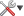
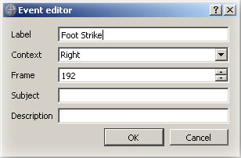

Time Bar
General information
- Use
 and
and  from the time bar to start and stop the to animation.
from the time bar to start and stop the to animation. - Use and to move from an event to the next or previous one.
- Use and and to quickly add or remove events.
- Use  to change marker trajectory length, ground orientation, playback speed, view GRF butterfly and other options related to acquisition.
- Use
 to edit, remove or clear events.
to edit, remove or clear events.
Shortcuts associated with the creation of events:
- Alt + 1: Insert foot strike
- Alt + 2: Insert foot off
- Alt + 3: Insert event
- Alt + 4: Insert left foot strike
- Alt + 5: Insert left foot off
- Alt + 6: Insert left event
- Alt + 7: Insert right foot strike
- Alt + 8: Insert right foot off
- Alt + 9: Insert right event
Ground orientation
Menu to choose the ground orientation
- By defaut the visual ground orientation is Plane XY.
- Ground orientation can be modified to Plane YZ or Plane ZX using tip from the drop-down menu.
Playback speed
Menu to choose the speed of the playback.
- By defaut the playback speed corresponds to the RealTime.
- The playback speed can be modified to 1/2, 1/4, 1/5, 1/10 or RealTime by using tip from the drop-down menu.
- Playback Speed at Real time: Play the acquisition at its frame rate (default).
- Playback Speed at 1/2: Play the acquisition at 50% of its frame rate.
- Playback Speed at 1/4: Play the acquisition at 25% of its frame rate.
- Playback Speed at 1/5: Play the acquisition at 20% of its frame rate.
- Playback Speed at 1/10: Play the acquisition at 10% of its frame rate.
- Playback Speed at Full Frames: Play all frames.
Marker Trajectory Length
Menu to choose the length of the markers' trajectory.
- By defaut the length is set to 100 frames.
- The length can be set to All Frames, 25, 50, 100 or 200 frames by using tip from the drop-down menu.
- Trajectory length will All Frames: Draw the whole trajectory.
- Trajectory length of 25 frames: Draw a total of 25 frames including holes.
- Trajectory length of 50 frames: Draw a total of 50 frames including holes.
- Trajectory length of 100 frames: Draw a total of 100 frames including holes (default).
- Trajectory length of 200 frames: Draw a total of 200 frames including holes.
Toggle GRF Butterfly
- Show/hide ground reaction forces butterfly.
- The color of the GRF vector can be modify in the visualization preference options.
Reframe From One
By default, the acquisition starts at the frame 1 or at the first frame of the selected region of interest. By choosing the Reframe From One option you can reset your acquisition frame and set the first frame to 1. You can always undo the action.
Insert event
- Right click on the time bar to insert event (Foot off / Foot Strike / General) and choose the Insert Event option from the drop-down menu.
- New or current event can be edited (Label / Context / Frame / Subject / Description) by using the Event editor window.
Edit selected events
- Right click on the event. To selected more than one event, use Shift or Ctrl.
- Left click on the event options button to see the drop-down menu and choose Edit selected events or use Ctrl + e.
- New or current event can be edited (Label / Context / Frame / Subject / Description) by using the Event editor window.

Event editor in insert mode
Remove selected events
- Left click on the event or use Shift or Ctrl key to selected more than one event.
- Right click on the Time bar and choose Removed selected events form the drop-down menu or use the delete key (backspace) to remove selected events.
- Action can be reversed by using undo/redo.
Clear events
- Use and choose "Clear events" form the drop-down menu to clear all events.
- Or right click on the time bar and selected Clear events from the drop-down menu. All the events will be removed from the time bar.
Next event
- Right click on the time bar and selected Next event form the drop-down menu to go to the next event. The forward tip on the time bar can also be use to move from one event to the next one.
Previous event
- Right click on the time bar and selected Previous event form the drop-down menu to go to the previous event. The backward tip on the time bar can also be use to move from one event to the previous one.
Interactively edit event's frame
- Move the mouse over an event and use the combination Alt + Left click (without release the mouse button). You are in an interactive mode to move the selected event (the event's color is blue). You have just to move the mouse and select the new frame. To be accurate, you can use the combination Shift + Alt + Left click which will move the event only frame by frame. To leave this mode, you only have to release the mouse button.
Note: Moving an event when the playback is active don't show the associated frame.
Zoom Region of Interest
- Move the left and right bounds from the time bar using the left click. Right click on the selected region and choose Zoom Region on Interest from the drop-down menu. Action can be reversed by using Unzoom Region of Interest from the same menu.
- You can also use the acquisition options button and choose Zoom Region of Interest. Action can be reversed by using Unzoom Region of Interest from the same menu.
Note: Moving a bounding bar when the playback is active don't show the associated frame.
Crop Region of Interest
- As with the actions to zoom/unzoom an region of interest, you can crop it and save only the selected part. Use the undo action to come back to the previous region of interest.